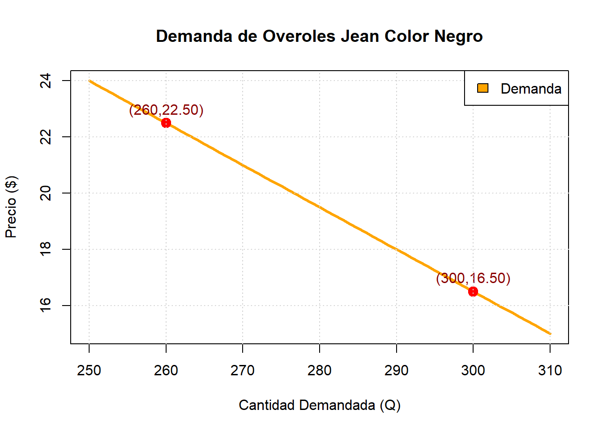
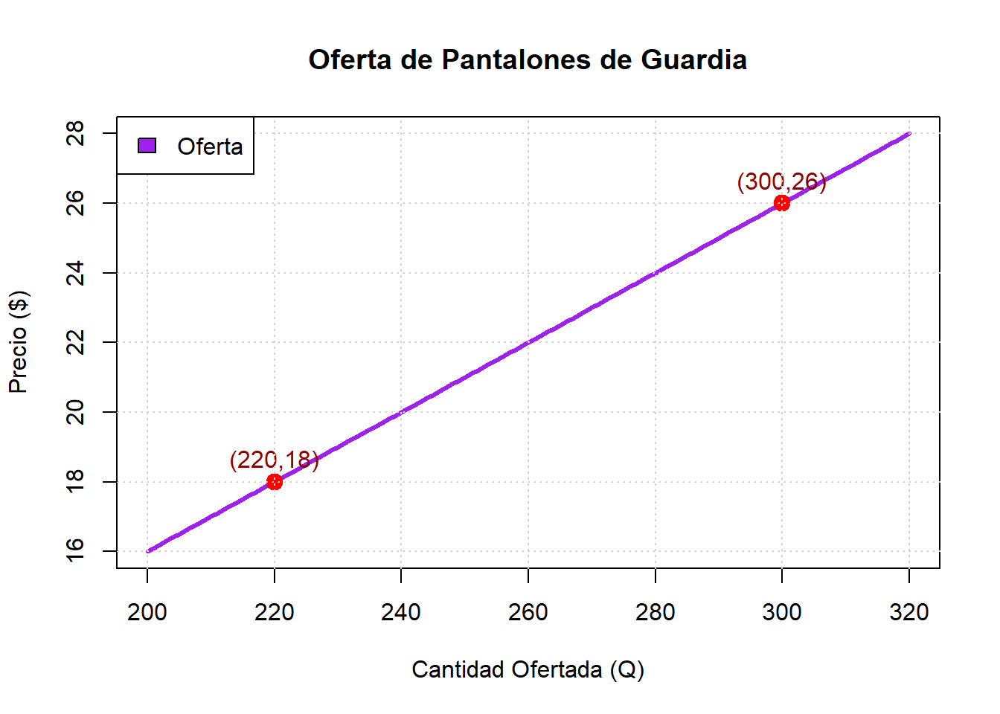

Q1 <- 300
P1 <- 16.50
Q2 <- 260
P2 <- 22.50EJERCICIOS DE APLICACION EMPRESA “CREACIONES JUVENILES”
EJERCICIOS DE APLICACION
Ecuación de demanda
La empresa Creaciones Juveniles recibió un pedido de 300 overoles jean color negro cuando el precio de venta era de $16,50 por unidad. Posteriormente, al aumentar el precio a $22,50 por unidad, la cantidad solicitada disminuyó a 260 overoles.
Determine la ecuación de demanda suponiendo que la relación entre el precio y la cantidad demandada es lineal.
Identificar los datos
Calcular la pendiente
Utilizamos la fórmula:
\[m=\frac{y_2-y_1}{x_2-X_1}\]
La pendiente obtenida es negativa (m=-0,15), lo que indica que existe una relación inversa entre el precio y la cantidad demandada. Al aumentar el precio, los clientes compran menos unidades.
m <- (P2 - P1)/(Q2 - Q1)
m[1] -0.15Calcular el intercepto
Usamos la ecuación
\[p=mq+b\]
b <- P1 - m*Q1
b[1] 61.5El intercepto representa el valor de la función cuando la cantidad demandada es igual a cero. Este valor permite completar la ecuación lineal de demanda.
Obtener la ecuación de demanda
Sustituyendo los valores de m y b
\[p=0,15q+61,5\]
cat("Ecuación de demanda: P =", m, "*Q +", b)Ecuación de demanda: P = -0.15 *Q + 61.5La ecuación obtenida describe matemáticamente el comportamiento de la demanda de overoles jean color negro y permite estimar el precio para diferentes cantidades demandadas.
Tabla de valores
Q <- c(260, 270, 280, 290, 300)
P <- -0.15*Q + 61.5
tabla <- data.frame(
Cantidad_Demandada = Q,
Precio = P
)
tabla Cantidad_Demandada Precio
1 260 22.5
2 270 21.0
3 280 19.5
4 290 18.0
5 300 16.5La tabla permite observar cómo el precio disminuye conforme aumenta la cantidad demandada, reflejando el comportamiento esperado de una función de demanda.
Gráfica de la demanda
# Función de demanda
p <- function(q){
-0.15*q + 61.5
}
# Rango de cantidades
q <- 250:310
# Gráfico
plot(q, p(q),
type = "l",
lwd = 3,
col = "orange",
main = "Demanda de Overoles Jean Color Negro",
xlab = "Cantidad Demandada (Q)",
ylab = "Precio ($)")
# Puntos del ejercicio
points(c(300,260),
c(16.5,22.5),
pch = 19,
col = "red",
cex = 1.5)
# Etiquetas
text(c(300,260),
c(16.5,22.5),
labels = c("(300,16.50)", "(260,22.50)"),
pos = 3,
col = "darkred")
# Cuadrícula
grid()
# Leyenda
legend("topright",
legend = c("Demanda"),
fill = c("orange"))
La gráfica presenta una línea descendente, lo que confirma que existe una relación inversa entre el precio y la cantidad demandada. A medida que el precio aumenta, la demanda disminuye.
Análisis
La ecuación de demanda obtenida es:
\[p=-0,15q+61.5\]
Esta ecuación muestra que existe una relación inversa entre el precio y la cantidad demandada. Cuando el precio de los overoles jean color negro aumenta, la cantidad solicitada por los clientes disminuye. Asimismo, si el precio baja, la demanda tiende a incrementarse.
La gráfica presenta una tendencia descendente, lo que confirma el comportamiento normal de la demanda. Por ello, Creaciones Juveniles puede utilizar esta ecuación para estimar la cantidad que podría vender a diferentes niveles de precio y apoyar la toma de decisiones comerciales.
Ecuación de oferta
La empresa Creaciones Juveniles recibió un pedido de la empresa Tecnoacces para la confección de pantalones de guardia. Cuando el precio de venta fue de $18,00 por unidad, la empresa estuvo dispuesta a ofertar 220 pantalones. Posteriormente, al aumentar el precio a $26,00 por unidad, la cantidad ofertada aumentó a 300 pantalones.
Suponiendo que la relación entre el precio y la cantidad ofertada es lineal, determine la ecuación de oferta para los pantalones de guardia.
Identificar los datos
Q1 <- 220
P1 <- 18.00
Q2 <- 300
P2 <- 26.00Se registraron dos observaciones de la oferta de pantalones de guardia. Cuando el precio fue de $18,00, la empresa estuvo dispuesta a ofertar 220 unidades. Al aumentar el precio a $26,00, la cantidad ofertada aumentó a 300 unidades.
Calcular la pendiente
\[m=\frac{y_2-y_1}{x_2-X_1}\]
m <- (P2 - P1)/(Q2 - Q1)
m[1] 0.1La pendiente obtenida es positiva (m=0,1), lo que indica una relación directa entre el precio y la cantidad ofertada. Cuando el precio aumenta, la empresa está dispuesta a ofrecer más unidades al mercado.
Calcular el intercepto (b)
Fórmula:
\[p=mq+b\]
b <- P1 - m*Q1
b[1] -4El intercepto permite completar la ecuación lineal de oferta y representa el valor de la función cuando la cantidad ofertada es igual a cero.
Obtener la ecuación de oferta
cat("P =", m, "*Q", b)P = 0.1 *Q -4Ecuación de oferta
\[p=0.1q-4\]La ecuación obtenida describe matemáticamente el comportamiento de la oferta de pantalones de guardia y permite estimar el precio para distintos niveles de producción.
Tabla de valores
Q <- c(220, 240, 260, 280, 300)
P <- 0.1*Q - 4
tabla <- data.frame(
Cantidad_Ofertada = Q,
Precio = P
)
tabla Cantidad_Ofertada Precio
1 220 18
2 240 20
3 260 22
4 280 24
5 300 26La tabla muestra que a medida que aumenta la cantidad ofertada, también aumenta el precio, reflejando el comportamiento característico de una función de oferta.
Grafica de la oferta
# Función de oferta
p <- function(q){
0.1*q - 4
}
# Valores de Q
q <- 200:320
# Gráfica
plot(q, p(q),
type = "l",
lwd = 3,
col = "purple",
main = "Oferta de Pantalones de Guardia",
xlab = "Cantidad Ofertada (Q)",
ylab = "Precio ($)")
# Puntos dados en el ejercicio
points(c(220,300),
c(18,26),
pch = 19,
col = "red",
cex = 1.5)
# Etiquetas
text(c(220,300),
c(18,26),
labels = c("(220,18)", "(300,26)"),
pos = 3,
col = "darkred")
# Cuadrícula
grid()
# Leyenda
legend("topleft",
legend = "Oferta",
fill = "purple")
La gráfica presenta una línea ascendente, lo que confirma la relación directa entre el precio y la cantidad ofertada. A mayores precios, la empresa está dispuesta a ofertar una mayor cantidad de pantalones de guardia.
Análisis
La ecuación de oferta obtenida es:
\[p=0.1q-4\]
La pendiente positiva indica que existe una relación directa entre el precio y la cantidad ofertada. Por lo tanto, cuando el precio de los pantalones de guardia aumenta, Creaciones Juveniles está dispuesta a ofertar una mayor cantidad de unidades.
Referencias
Creaciones Juveniles. 2026. Sitio Web Oficial de Creaciones Juveniles. https://creacionesjuveniles.com/.